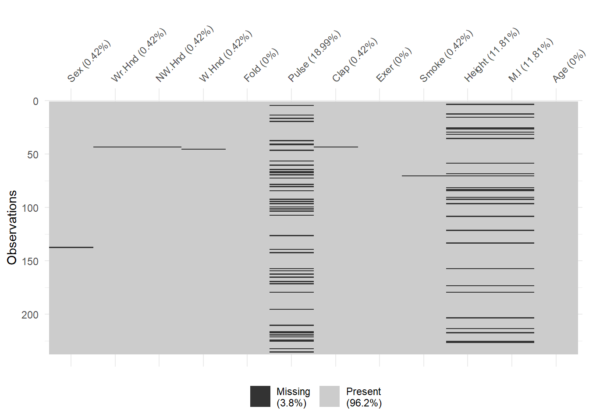
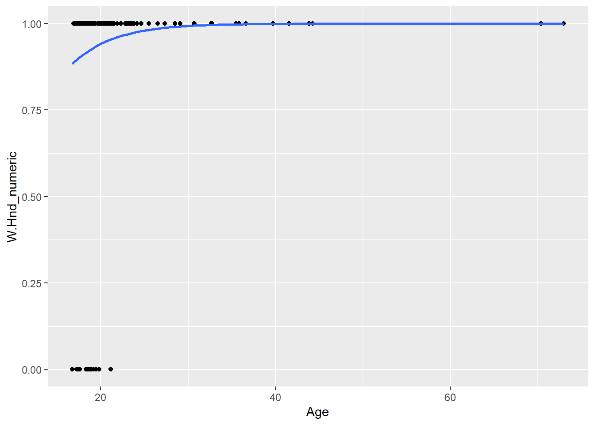
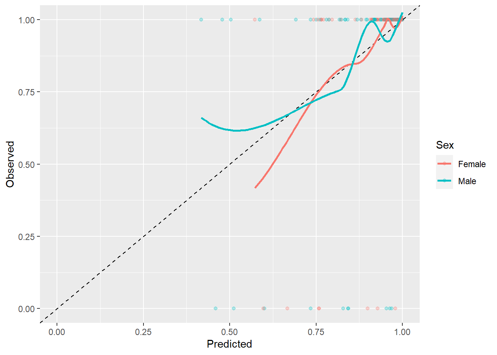

Dette er en kort introduktion til R. Formålet er at vise nogle af de ting man kan med R og samtidig vise, hvor man kan læse om mere.
Overordnet, så introduceres kort:
Det forudsættes, at man har prøve at åbne R/RStudio og arbejder i RStudio. Hvis man vil reproducere / følge beskrivelsen her, så kan man kopiere kodestykkerne ind i sit eget R-scripts eller Rmarkdown.
I “base”-R - altså den udgave, som kommer med installationen - ligger en masse muligheder for data-manipulation og statistisk analyse. Der bliver dog hele tiden udviklet nye funktioner/funktionaliteter, som løser forskellige typer af problemer, som R-bruger støder på. Mange af disse løsninger deles i pakker, som gratis kan hentes fra nettet. Det kræver følgende: Først skal pakken installeres. Herefter skal pakken hentesn fra dit lokale pakke-bibliotek.
En pakke installeres ved at eksempelvis at skrive install.packages("MASS"). Man behøver kun installere en pakke en gang. Hvis man vil hente nye opdateringer til pakken skal den dog installeres igen.
Efter pakken er installeret kan man indlæse pakke i ens R-session ved at skrive library(MASS). Det er god praksis at indlæse sine pakker i starten af sit program.
I dette program indlæses pakkerne som vist nedenfor:
# install.packages("MASS") first if not already installed.
library(MASS) # Dataset
library(tidyverse) # Datamanipulation & plots
library(broom) # Functions to extract model statistics and parameters
library(stargazer) # Tables for statistical models
library(naniar) # Visualizing missing dataSom i mange andre programmer kan man “udkommentere” kode. I R gør man det ved at indsætte # foran sin kode som vist ovenfor.
Bemærk i øvrigt at tidyverse (dplyr) “overskriver” en række funktioner fra pakkerne stats og MASS
I pakken ´MASS´ ligger datasættet survey. Skrive man ?survey i sin konsol og trykker enter, kommer følgende beskrivelse frem:
This data frame contains the responses of 237 Statistics I students at the University of Adelaide to a number of questions.
Med head funktionen, kan vi udskrive de første 6 observationer fra datasættet og at gå en ide om, hvad datasættet indeholder.
head(survey)## Sex Wr.Hnd NW.Hnd W.Hnd Fold Pulse Clap Exer Smoke Height
## 1 Female 18.5 18.0 Right R on L 92 Left Some Never 173.00
## 2 Male 19.5 20.5 Left R on L 104 Left None Regul 177.80
## 3 Male 18.0 13.3 Right L on R 87 Neither None Occas NA
## 4 Male 18.8 18.9 Right R on L NA Neither None Never 160.00
## 5 Male 20.0 20.0 Right Neither 35 Right Some Never 165.00
## 6 Female 18.0 17.7 Right L on R 64 Right Some Never 172.72
## M.I Age
## 1 Metric 18.250
## 2 Imperial 17.583
## 3 <NA> 16.917
## 4 Metric 20.333
## 5 Metric 23.667
## 6 Imperial 21.000Alternativt kan man skrive
df <- head(survey)Og trykke på datasættet ´df´ i ens “Environment”.
De tre mest populære tilgange til datamanipulation i R er base, tidyverse og data.table. tidyverse læner sig forholdvis tæt op af SQL og syntaksen er forholdsvis nem at lære. Selvom det kan være nyttigt at kende lidt til de andre tilgange, så er ´tidyverse´ et godt udgangspunkt.
Datamanipulation er et bredt emne. En af de bedste bøger, som gratis kan læses på nettet er R for Data Science (https://r4ds.had.co.nz/). For at komme igang er det dog typisk nyttigt at kunne lave simple række- og kolonneoperationer.
Rækkeoperationer kan laves med ´filter´-funktionen. Nedenfor vælges kun rygere:
survey %>%
filter(Smoke == "Never") %>% # R er case-sensitive
head()## Sex Wr.Hnd NW.Hnd W.Hnd Fold Pulse Clap Exer Smoke Height
## 1 Female 18.5 18.0 Right R on L 92 Left Some Never 173.00
## 2 Male 18.8 18.9 Right R on L NA Neither None Never 160.00
## 3 Male 20.0 20.0 Right Neither 35 Right Some Never 165.00
## 4 Female 18.0 17.7 Right L on R 64 Right Some Never 172.72
## 5 Male 17.7 17.7 Right L on R 83 Right Freq Never 182.88
## 6 Female 17.0 17.3 Right R on L 74 Right Freq Never 157.00
## M.I Age
## 1 Metric 18.250
## 2 Metric 20.333
## 3 Metric 23.667
## 4 Imperial 21.000
## 5 Imperial 18.833
## 6 Metric 35.833Bemærk, at equal i R består af to == (i modsætning til eksempelvis SAS, hvor man skriver = eller eq)
Eksemplet nedenfor vælger observationer, hvor kravet er en målt puls, som er større en 70:
survey %>%
filter(Pulse > 70) %>%
head()## Sex Wr.Hnd NW.Hnd W.Hnd Fold Pulse Clap Exer Smoke Height
## 1 Female 18.5 18.0 Right R on L 92 Left Some Never 173.00
## 2 Male 19.5 20.5 Left R on L 104 Left None Regul 177.80
## 3 Male 18.0 13.3 Right L on R 87 Neither None Occas NA
## 4 Male 17.7 17.7 Right L on R 83 Right Freq Never 182.88
## 5 Female 17.0 17.3 Right R on L 74 Right Freq Never 157.00
## 6 Male 20.0 19.5 Right R on L 72 Right Some Never 175.00
## M.I Age
## 1 Metric 18.250
## 2 Imperial 17.583
## 3 <NA> 16.917
## 4 Imperial 18.833
## 5 Metric 35.833
## 6 Metric 19.000Betingelser kan nemt kobles sammen som i de fleste andre programmeringssprog:
survey %>%
filter(Pulse > 70 & Smoke == "Never") %>%
head()## Sex Wr.Hnd NW.Hnd W.Hnd Fold Pulse Clap Exer Smoke Height
## 1 Female 18.5 18.0 Right R on L 92 Left Some Never 173.00
## 2 Male 17.7 17.7 Right L on R 83 Right Freq Never 182.88
## 3 Female 17.0 17.3 Right R on L 74 Right Freq Never 157.00
## 4 Male 20.0 19.5 Right R on L 72 Right Some Never 175.00
## 5 Male 18.5 18.5 Right R on L 90 Right Some Never 167.00
## 6 Female 17.0 17.2 Right L on R 80 Right Freq Never 156.20
## M.I Age
## 1 Metric 18.250
## 2 Imperial 18.833
## 3 Metric 35.833
## 4 Metric 19.000
## 5 Metric 22.333
## 6 Imperial 28.500Den mærkelige kombination ´%>%´ er en pipe-operator, som kæder koden sammen. Det fungerer ved at det som står op venstresiden/over, bliver indsæt som første argument i næste funktion. For eksempel kan koden ovenfor også skrives som, men koden bliver sværere at læse, fordi man skal læse indefra og ud fremfor fra venstre mod højre (som man normalt læser). ´%>%´kan altså kæden flere funktioner sammen i et mere læseligt format, som gør det nemmere både at skrive og læse koden. På Windows har ´%>%´ short-cuttet Ctrl+Shift+m. Et tip er at lave en post-it med short-cuttet, som man sætter nederst på sin skærm indtil man husker det udenad (det er i øvrigt et godt trick til at lære short-cuts generelt)
head(filter(survey, Pulse > 70 & Smoke == "Never"))## Sex Wr.Hnd NW.Hnd W.Hnd Fold Pulse Clap Exer Smoke Height
## 1 Female 18.5 18.0 Right R on L 92 Left Some Never 173.00
## 2 Male 17.7 17.7 Right L on R 83 Right Freq Never 182.88
## 3 Female 17.0 17.3 Right R on L 74 Right Freq Never 157.00
## 4 Male 20.0 19.5 Right R on L 72 Right Some Never 175.00
## 5 Male 18.5 18.5 Right R on L 90 Right Some Never 167.00
## 6 Female 17.0 17.2 Right L on R 80 Right Freq Never 156.20
## M.I Age
## 1 Metric 18.250
## 2 Imperial 18.833
## 3 Metric 35.833
## 4 Metric 19.000
## 5 Metric 22.333
## 6 Imperial 28.500´select´-funktionen kan bruges til at manipulere variablene/kolonnerne i ens datasæt. Denne funktion er meget fleksibel og an kombineres med andre funktioner. Nedenfor vises hvordan man vælger variablene fra om med Fold til og med Clap i forhold til den rækkefølge, som variablene ligger i:
survey %>%
select(Fold:Clap) %>%
head()## Fold Pulse Clap
## 1 R on L 92 Left
## 2 R on L 104 Left
## 3 L on R 87 Neither
## 4 R on L NA Neither
## 5 Neither 35 Right
## 6 L on R 64 RightHvis man vil fravælge variable, kan man sætte et - foran:
survey %>%
select(-(Fold:Clap)) %>%
head()## Sex Wr.Hnd NW.Hnd W.Hnd Exer Smoke Height M.I Age
## 1 Female 18.5 18.0 Right Some Never 173.00 Metric 18.250
## 2 Male 19.5 20.5 Left None Regul 177.80 Imperial 17.583
## 3 Male 18.0 13.3 Right None Occas NA <NA> 16.917
## 4 Male 18.8 18.9 Right None Never 160.00 Metric 20.333
## 5 Male 20.0 20.0 Right Some Never 165.00 Metric 23.667
## 6 Female 18.0 17.7 Right Some Never 172.72 Imperial 21.000Man kan også vælge afhængigt af hvad variablene eksempelvis ender på:
survey %>%
select(ends_with("Hnd")) %>%
head()## Wr.Hnd NW.Hnd W.Hnd
## 1 18.5 18.0 Right
## 2 19.5 20.5 Left
## 3 18.0 13.3 Right
## 4 18.8 18.9 Right
## 5 20.0 20.0 Right
## 6 18.0 17.7 RightDe er tilsvarende funktioner, som hedder starts_with, contains, matches og num_range. Ved at skrive ?starts_with i konsolen og trykke enter, kan man læse mere om funktionerne.
Endelig kan man bytte om på rækkefølgen af variablene:
survey %>%
select(Age, Smoke, everything()) %>%
head()## Age Smoke Sex Wr.Hnd NW.Hnd W.Hnd Fold Pulse Clap Exer
## 1 18.250 Never Female 18.5 18.0 Right R on L 92 Left Some
## 2 17.583 Regul Male 19.5 20.5 Left R on L 104 Left None
## 3 16.917 Occas Male 18.0 13.3 Right L on R 87 Neither None
## 4 20.333 Never Male 18.8 18.9 Right R on L NA Neither None
## 5 23.667 Never Male 20.0 20.0 Right Neither 35 Right Some
## 6 21.000 Never Female 18.0 17.7 Right L on R 64 Right Some
## Height M.I
## 1 173.00 Metric
## 2 177.80 Imperial
## 3 NA <NA>
## 4 160.00 Metric
## 5 165.00 Metric
## 6 172.72 ImperialFunktionen everything tager resten af observationerne i den oprindelige rækkefølge og sætter efter Age og Smoke.
TODO write_csv, read_csv
vis_miss(survey)
estimation_data <-
survey %>%
select(-Pulse, -M.I, - Height) %>% # Remove columns
filter(!if_any(everything(),
~ is.na(.)
)) # Remove obs with any missing
estimation_data %>% head()## Sex Wr.Hnd NW.Hnd W.Hnd Fold Clap Exer Smoke Age
## 1 Female 18.5 18.0 Right R on L Left Some Never 18.250
## 2 Male 19.5 20.5 Left R on L Left None Regul 17.583
## 3 Male 18.0 13.3 Right L on R Neither None Occas 16.917
## 4 Male 18.8 18.9 Right R on L Neither None Never 20.333
## 5 Male 20.0 20.0 Right Neither Right Some Never 23.667
## 6 Female 18.0 17.7 Right L on R Right Some Never 21.000estimation_data %>%
count(W.Hnd) %>%
mutate(share = n / sum(n))## W.Hnd n share
## 1 Left 17 0.07296137
## 2 Right 216 0.92703863estimation_data %>%
mutate(W.Hnd_numeric = W.Hnd %>% as.numeric() - 1 ) %>% # Make variable 0-based
ggplot(aes(x = Age, y = W.Hnd_numeric)) +
geom_point() +
geom_smooth(method = "glm",
method.args = list(family = "binomial"),
se = FALSE)## `geom_smooth()` using formula 'y ~ x'
model1 <-
glm(formula = W.Hnd ~ Sex + Fold + Clap + Exer + Smoke + Age,
family = "binomial",
data = estimation_data
)
model1 # default output##
## Call: glm(formula = W.Hnd ~ Sex + Fold + Clap + Exer + Smoke + Age,
## family = "binomial", data = estimation_data)
##
## Coefficients:
## (Intercept) SexMale FoldNeither FoldR on L ClapNeither
## -3.0842 -0.5394 -0.3136 0.7742 1.4995
## ClapRight ExerNone ExerSome SmokeNever SmokeOccas
## 2.6437 -1.0641 -0.8508 0.1037 -0.9415
## SmokeRegul Age
## 0.7269 0.2390
##
## Degrees of Freedom: 232 Total (i.e. Null); 221 Residual
## Null Deviance: 121.7
## Residual Deviance: 95.17 AIC: 119.2model2 <-
glm(formula = W.Hnd ~ Sex + Clap + Exer + Smoke + Age,
family = "binomial",
data = estimation_data
)summary(model1)##
## Call:
## glm(formula = W.Hnd ~ Sex + Fold + Clap + Exer + Smoke + Age,
## family = "binomial", data = estimation_data)
##
## Deviance Residuals:
## Min 1Q Median 3Q Max
## -2.7908 0.1501 0.2424 0.3281 1.3223
##
## Coefficients:
## Estimate Std. Error z value Pr(>|z|)
## (Intercept) -3.0842 3.8830 -0.794 0.42704
## SexMale -0.5394 0.5865 -0.920 0.35768
## FoldNeither -0.3136 1.1846 -0.265 0.79122
## FoldR on L 0.7742 0.5893 1.314 0.18896
## ClapNeither 1.4995 0.7117 2.107 0.03514 *
## ClapRight 2.6437 0.6941 3.809 0.00014 ***
## ExerNone -1.0641 0.8387 -1.269 0.20450
## ExerSome -0.8508 0.6405 -1.328 0.18410
## SmokeNever 0.1037 1.2662 0.082 0.93470
## SmokeOccas -0.9415 1.4674 -0.642 0.52112
## SmokeRegul 0.7269 1.6628 0.437 0.66199
## Age 0.2390 0.1928 1.239 0.21528
## ---
## Signif. codes: 0 '***' 0.001 '**' 0.01 '*' 0.05 '.' 0.1 ' ' 1
##
## (Dispersion parameter for binomial family taken to be 1)
##
## Null deviance: 121.734 on 232 degrees of freedom
## Residual deviance: 95.175 on 221 degrees of freedom
## AIC: 119.17
##
## Number of Fisher Scoring iterations: 8glance(model1)## # A tibble: 1 x 8
## null.deviance df.null logLik AIC BIC deviance df.residual nobs
## <dbl> <int> <dbl> <dbl> <dbl> <dbl> <int> <int>
## 1 122. 232 -47.6 119. 161. 95.2 221 233Get coeffecients etc.
If your right hand is on top when you clap, the odds are 14:1 that right is your writing hand rather than the left.
model1 %>%
tidy(exponentiate = TRUE) %>% # Transforms estimates into odds
head()## # A tibble: 6 x 5
## term estimate std.error statistic p.value
## <chr> <dbl> <dbl> <dbl> <dbl>
## 1 (Intercept) 0.0458 3.88 -0.794 0.427
## 2 SexMale 0.583 0.586 -0.920 0.358
## 3 FoldNeither 0.731 1.18 -0.265 0.791
## 4 FoldR on L 2.17 0.589 1.31 0.189
## 5 ClapNeither 4.48 0.712 2.11 0.0351
## 6 ClapRight 14.1 0.694 3.81 0.000140Add fitted values and residuals to each observation
model1_augmented <-
model1 %>%
augment(type.predict = "response") %>% # Get fitted probabilities
select(.fitted:.cooksd, everything()) # Reorder columns
head(model1_augmented)## # A tibble: 6 x 13
## .fitted .resid .std.resid .hat .sigma .cooksd W.Hnd Sex Fold
## <dbl> <dbl> <dbl> <dbl> <dbl> <dbl> <fct> <fct> <fct>
## 1 0.787 0.693 0.717 0.0650 0.656 0.00168 Right Female R on L
## 2 0.734 -1.63 -1.99 0.332 0.644 0.171 Left Male R on L
## 3 0.478 1.21 1.45 0.294 0.650 0.0537 Right Male L on R
## 4 0.927 0.388 0.402 0.0694 0.657 0.000522 Right Male R on L
## 5 0.974 0.230 0.237 0.0509 0.658 0.000127 Right Male Neither
## 6 0.979 0.207 0.209 0.0168 0.658 0.0000314 Right Female L on R
## # ... with 4 more variables: Clap <fct>, Exer <fct>, Smoke <fct>,
## # Age <dbl>TODO: Add some diagnostic plots / analysis of .cooksd (Dobson and Barnett, )
How well do fitted values correspond to observed proportions?
model1_augmented %>%
mutate(W.Hnd_int = W.Hnd %>% as.integer() - 1) %>%
ggplot(aes(x = .fitted, y = W.Hnd_int, col = Sex)) +
geom_point(alpha = 0.3) + # Transparency of points
geom_abline(slope = 1,
intercept = 0,
linetype = "dashed") +
geom_smooth(se = FALSE) + # loess smoother default
coord_cartesian(xlim = c(0,1),
ylim = c(0,1)) +
labs(x = "Predicted",
y = "Observed")## `geom_smooth()` using method = 'loess' and formula 'y ~ x'
Stratify further by exercise
model1_augmented %>%
mutate(W.Hnd_int = W.Hnd %>% as.integer() - 1) %>%
ggplot(aes(x = .fitted, y = W.Hnd_int, col = Sex)) +
facet_wrap(~Exer, ncol = 1) +
geom_point(alpha = 0.3) + # Transparency of points
geom_abline(slope = 1,
intercept = 0,
linetype = "dashed") +
geom_smooth(se = FALSE) + # loess smoother default
coord_cartesian(xlim = c(0,1),
ylim = c(0,1)) +
labs(x = "Predicted",
y = "Observed")## `geom_smooth()` using method = 'loess' and formula 'y ~ x'#For html rendering
stargazer(model1, model2,
single.row = TRUE,
type = "html",
apply.coef = exp,
header = FALSE,
#out = "test.html",
report = "vc*")| Dependent variable: | ||
| W.Hnd | ||
| (1) | (2) | |
| SexMale | 0.583 | 0.539 |
| FoldNeither | 0.731 | |
| FoldR on L | 2.169*** | |
| ClapNeither | 4.479*** | 4.013*** |
| ClapRight | 14.065*** | 12.031*** |
| ExerNone | 0.345 | 0.364 |
| ExerSome | 0.427 | 0.471 |
| SmokeNever | 1.109 | 1.235 |
| SmokeOccas | 0.390 | 0.450 |
| SmokeRegul | 2.069 | 2.518 |
| Age | 1.270*** | 1.249*** |
| Constant | 0.046 | 0.086 |
| Observations | 233 | 233 |
| Log Likelihood | -47.587 | -48.620 |
| Akaike Inf. Crit. | 119.175 | 117.240 |
| Note: | p<0.1; p<0.05; p<0.01 | |
#For pdf rendering
# stargazer(model1, model2,
# single.row = TRUE,
# type = "latex",
# apply.coef = exp,
# header = FALSE,
# report = "vc*")Note that output can be saved in .tex and copied to latex
R and dplyr does not encourage the use of for loops (although it is possible).
n = 0
for (i in c(1,2,3)) {
n = i + 1
print(n)
}## [1] 2
## [1] 3
## [1] 4Copy error message and google it.